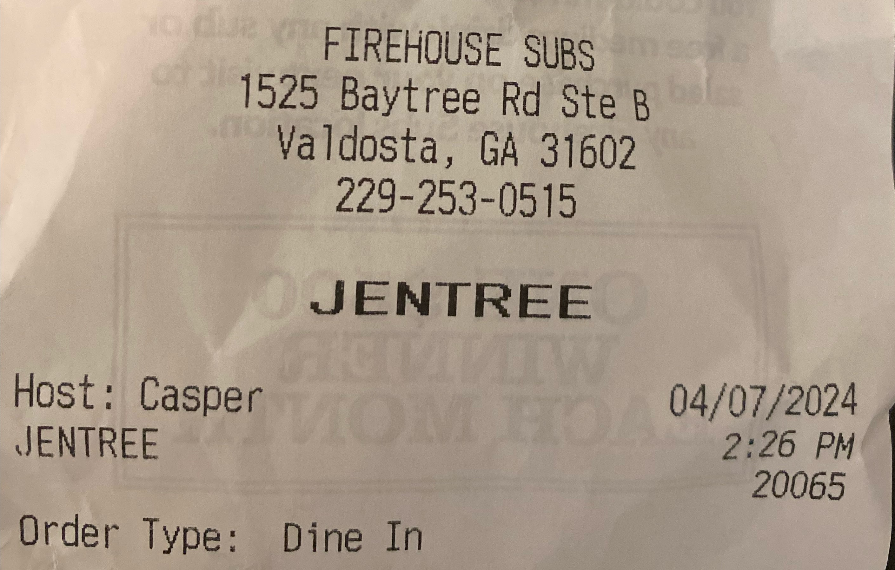
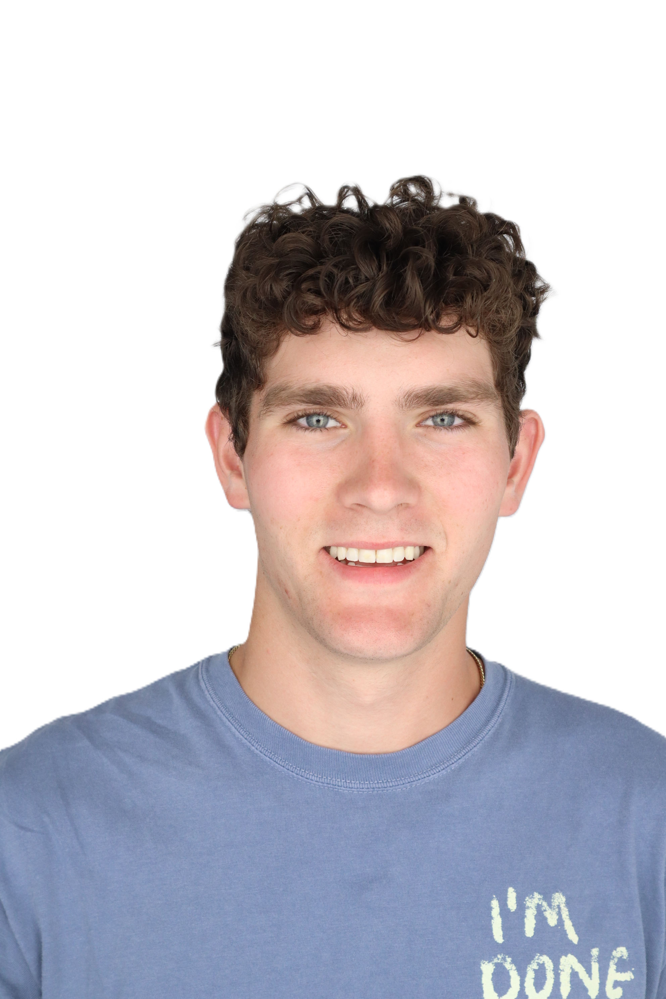

Hi, I'm Gentry
Pronounced:



To steal a phrase from an MIT PCB design OpenCourseWare course I did: I love the art and science of engineering.
In my mind, the science of engineering is how you build something - the math and physics you harness to make something that gets the job.
The art of engineering is why you build it - it's the satisfaction of making something that's elegant, and intuitive, and cool.
I chose EE because I love both... and because I'm a big DIY guy and I wanted to be able to do more stuff.
With that, I've really enjoyed working on embedded systems: taking projects from idea to prototype, seeing them in action, and then improving them.
Through those projects, I've done a good bit of PCBAs, sensor fusion, and controls - and I'm always looking to build on those and learn new skills/applications.
I want to work on things that makes the world a better place. That's pretty intentionally open-ended, but I'll add that I've been particularly interested in bionics, robotics, and wearables.
My favorite past times are over-optimizing my life and doing just about anything with my friends and family. Below you'll see a bit more about my life.

I love sports in general, and I'm always down for whatever people are playing, but soccer is definitely my main sport. I'm on the Georgia Tech men's club soccer team and I also enjoy playing pickup with random groups around.
Assembled aerial ground units, integrated avionics hardware, and configured brushless motor control telemetry.
Architected data-logging and time-synchronization telemetry pipelines for edge computer vision applications.
Wearable motion-tracking game controller utilizing ESP32, MPU-6050 IMU, and custom sensor fusion.
Ten-pin hardware diagnostic tool driven by low-level register configuration on Microchip ATSAMD20.
DSP pipeline computing FFT and Power Spectral Density over sensory substitution force datasets.